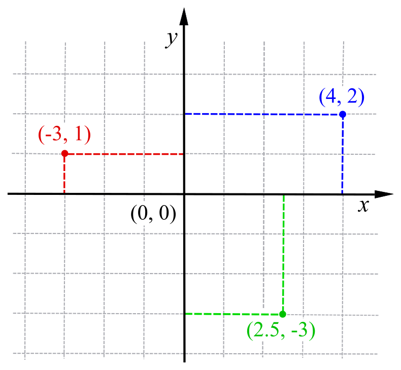
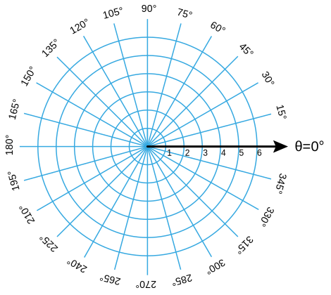

In grade 10, I met the best math teacher I've ever had. From hearing mythological stories with accompanying ambient lighting on Fridays to stopping a financial math unit to discuss practical investment advice… there was always something new to learn in his classroom.
But when it came to math, my teacher was one of the most serious math-lovers you could meet. It's only now that I start to look back at all his simple lessons to see their wisdom.
And the biggest lesson I remember…? Him turning the quadratic equation in a song so that we would never forget it 😁
But the second biggest lesson? It's this little saying that he had when explaining to us how to solve problems:
"There's the right way… and then there's the long way."
I'm now going to explain what that means by nerding out about physics and economics. 🤓 You can skip to the end for a TL;DR
Here's a Physics Explanation
This simple saying came back to me two years later, when I was in a grade 12 physics class one afternoon.
My teacher was talking about analysing the motion of objects spinning in circles instead of just moving in a straight line. I won't go into all the messy details, but I will explain one key idea:
- In high school physics, we usually just apply theoretical equations to real-life situations with a lot of assumptions. The answers are close enough.
- One of the assumptions we use are about directions and reference points. For instance, if we're looking at the motion of a ball being thrown at a wall, we can say that the ball is moving AWAY (from the thrower) or moving TOWARDS (the wall).
- But when we look at circular motion, it's hard to assume one direction or reference to look at the situation through.
For example, if we look at these planets moving in orbit here:
When the planets are at the bottom of the circle, they're moving straight 'right'. When they're at the right, they're moving straight 'up'. And in any moment in between, they're moving in all sorts of constantly changing directions 😖
This is very messy to deal with. Thinking about 'lefts' and 'rights' (or more formally, a Cartesian Coordinate System 😉).
This is just a model that we use to describe physical space. We don't have to use just this model though. We can use lots of other models! So what if there was a model to describe the planets' motion without all the wacky changes in x and y directions? 🤔
Introducing the Polar Coordinate System!
Don't worry if it looks messy. With Cartesian coordinates, you basically say, "Move 4 right, then 3 up." With Polar coordinates, you say, "Move 37 degrees counter-clockwise, then go forward 5."
Ie. Instead of specifying x and y coordinates, you specify an angle and a distance. Why is this important??? Take another look at the planets again.
NOW, the planets aren't moving in wacky x and y directions. Each planet is always the same distance away from the sun. It's only the angle from the starting point that changes. 🎉
This makes it MUCH easier to analyse the motion of the planets. *Trust me, when you're knee-deep in Newton's 11th equation and realise that there were only supposed to be 3 equations in the first place, you'll LOVE this system😜
Think about what we just did here. We just CHOSE to look at the same situation with a different perspective (model). And it was helpful!
Both perspectives were correct. One was more useful.
Ie. There's the right way and then there's the long way.
Here's an Economics Explanation
Another key point I realised about my math teacher's little saying was also two years later in my grade 12 economics class.
High school economics is really a course in diagrams. We have big diagrams and small diagrams, long diagrams and short diagrams… and a few of them actually make sense too! 😀
Many of them don't make sense at first, however. So I was pacing around in my bedroom one evening trying to make sense of two diagrams. They were about how an economy grows over time. For example, here's one of them showing an economy getting better at producing phones and computers:

The two curves represent the maximum amount the economy CAN make. The two dots represent the amount the economy actually DO make. Here's something to consider - just looking at real life through the perspective of this model means there are certain assumptions we have:
- Amount made ≤ maximum possible amount. The curves tell us there IS a maximum amount of phones/computers we can make in real life (duh 😑). So the dots of how much we DO make can't be outside the curves.
- More computers = fewer phones. On top of this, a few more computers = a lot fewer phones. Otherwise, we would have straight lines (1 more computer = 1 less phone) instead of curves.
What about the before and after? It represents a situation like making small electronics transistors cheaper. If you look at the red 'after' situation, there are three differences from the 'before' situation in blue.
- The dot is on the curve after. This means the amount made = the maximum amount possible. For economists, this is great! It means things are perfectly efficient after.
- The 'after' curve has a greater maximum possible amount of phones and computers made than the 'before' curve.
- And the maximum possible amount of phones increased more than computers. ☎️ 🎉
That makes sense! Making small electronics more cheaply is better for making phones (which use small electronics more than computers do).
Now here's the fun part…
Economists also have completely different models to look at this situation through! Instead of looking at the amount of phones produced vs. the amount of computers, they might look at the average price of all electronics produced and the amount of all electronics made:

Our assumption here is that average prices don't really rise until we make a specific amount of electronics - then it rises a LOT. Think of it like buying more rare metals for your electronics… it's fine for a bit, but when Earth runs out of them, you can keep paying higher prices and not get a greater amount. That's the vertical part of the curve showing the maximum amount.
But look at what this diagram tells us versus the first one - or what it doesn't tell us… 😶
- We don't know whether the amount we DO make is the maximum amount we CAN make.
- We don't know whether the maximum amount we can make increased more for phones or for computers.
- If we produce X amount of phones, we don't know how many computers we can make.
Why is this important?
The perspective with which we look at reality determines what we do or don't see.
In some cases, we don't want to look at all the complicated details from the first one. In other cases, we're losing out on relevant details. Again, depending on our goal, there's the right way and the long way.
TL;DR
The crazy part is -all these ideas aren't just limited to academics.
- In life, how often could we become more efficient from not being perfectionists and just telling ourselves, "There's the right way and the long way?"
- How many times are we afraid of not knowing the right answer, not realising that there might be multiple right answers? Or that we don't need to know the right answer - only the most useful answer.
- How many times do we fail to recognise that we don't see reality, but just our perspective of reality? How many times do we assume others see the same things as us?
It's been a lot of fun learning since grade 10, but I never realised the hidden layers of wisdom behind it all. I guess it's all just a different perspective on my teacher's wisdom 😉
*Note: All visuals are licenced for reuse unless otherwise linked to a source.
- Madhav Malhotra
Wed, 04 Nov 2020 23:06:11 +0000